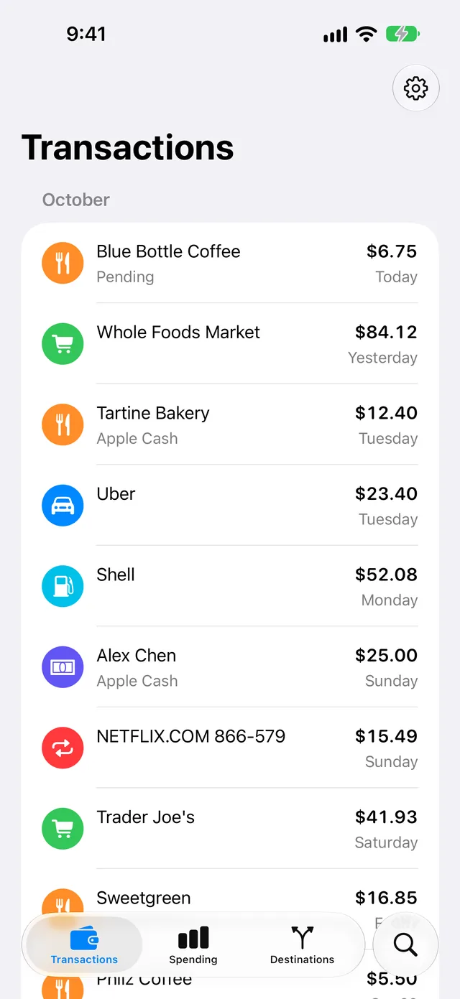
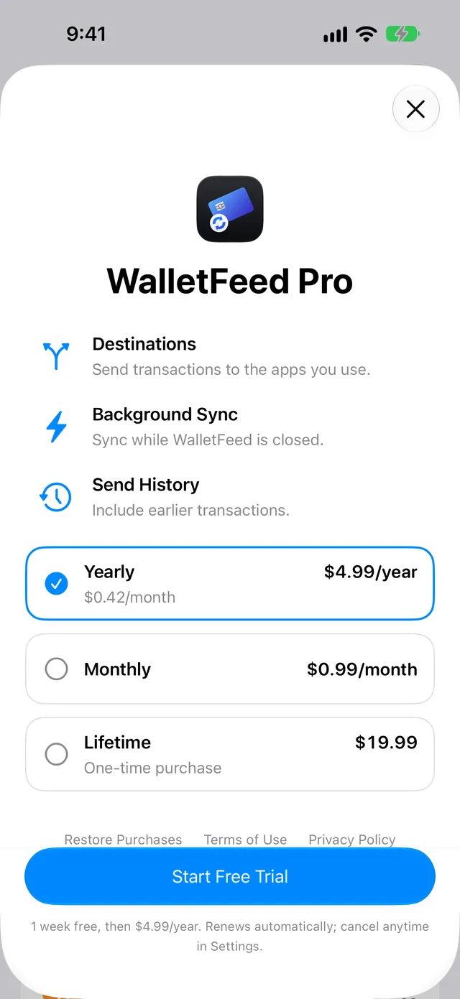
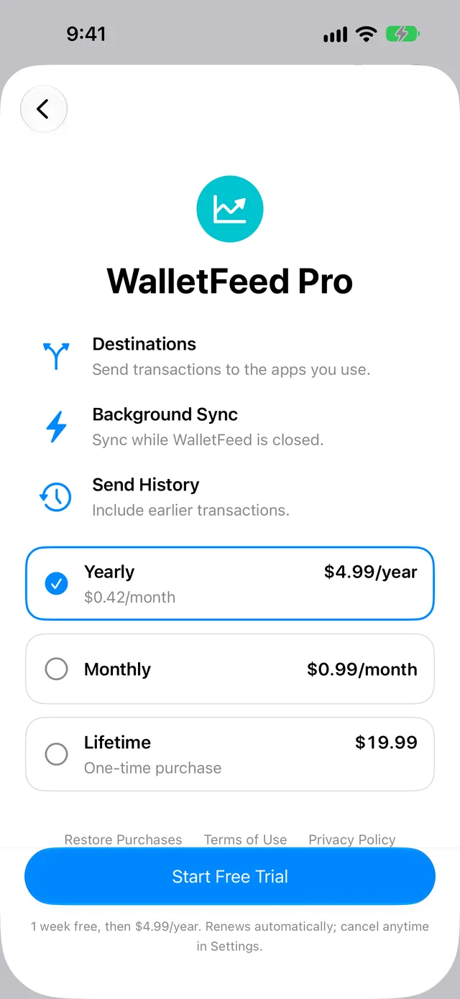

WalletFeed Pro
WalletFeed Pro lets WalletFeed send your Apple Card, Apple Cash and Savings transactions to destinations, for example a budget app or a spreadsheet. WalletFeed Pro is a subscription with a 1-week free trial, or a one-time Lifetime purchase.
You can use these functions without WalletFeed Pro:
Functions of WalletFeed Pro
WalletFeed sends your transactions to each destination that you add. While WalletFeed is open, a destination receives changes in seconds. When WalletFeed is not open, iOS starts WalletFeed approximately 1 hour or less after a change in Wallet. If Background Sync is on in Settings › Sync, WalletFeed then sends the change.
A new destination also receives previous transactions from the start date in Settings › Sync › Initial History. Initial History is All until you change it. A new Zapier, Make or Linear destination receives a maximum of 30 days of previous transactions. On the destination screen, Send History sends the transactions from before that date.
WalletFeed Pro adds the Sync section to Settings.
Plans and prices
The WalletFeed Pro screen shows these plans:
| Plan | Price | Free trial |
|---|---|---|
| Yearly | $4.99 a year ($0.42 a month) | 1 week |
| Monthly | $0.99 a month | 1 week |
| Lifetime | $19.99, one time | No free trial |
Yearly and Monthly are subscriptions. Lifetime is a one-time purchase.
You can get one free trial of WalletFeed Pro, for Yearly or for Monthly. After the free trial, the subscription continues at the price of the plan. If you cannot get a free trial, the button at the bottom of the screen shows Subscribe for Yearly and Monthly.
You can use Family Sharing with WalletFeed Pro.
Get WalletFeed Pro
-
On your iPhone, open WalletFeed.
-
Tap Settings (the gear button) at the top of the screen.

-
In the Subscription section, tap the WalletFeed Pro row that shows Upgrade.
Settings closes, and the WalletFeed Pro screen opens. It shows the plans and their prices. WalletFeed selects Yearly.

-
Tap a plan.
The text below the button at the bottom of the screen gives the terms of the plan, for example "1 week free, then $4.99/year."
-
Tap the button at the bottom of the screen, for example Start Free Trial or Buy Lifetime.
-
Complete the purchase on the App Store screen.
The WalletFeed Pro screen closes. When you open Settings again, the Subscription section shows your plan, for example Yearly.
Get WalletFeed Pro when you add a destination
Without WalletFeed Pro, the Add Destination screen shows all the destinations. When you tap a destination, WalletFeed shows the WalletFeed Pro screen.
-
In WalletFeed, tap Destinations at the bottom of the screen.
-
Tap + at the top of the screen.
The Add Destination screen opens.

-
Tap a destination, for example PocketSmith.
The WalletFeed Pro screen opens. It shows the icon of the destination above the title.

-
If you have a plan, tap Restore Purchases below the plans.
If the App Store finds your plan, the form for the destination opens. Steps 5 to 7 are not necessary.
-
Tap a plan.
-
Tap the button at the bottom of the screen, for example Start Free Trial.
-
Complete the purchase on the App Store screen.
The WalletFeed Pro screen changes to the form for the destination.
Get WalletFeed Pro on a different iPhone
When WalletFeed starts, it gets your plan from the App Store. If you have a plan but Settings shows Upgrade, for example on a new iPhone, you can get WalletFeed Pro again with Restore Purchases.
-
In WalletFeed, tap Settings (the gear button) at the top of the screen.
-
In the Subscription section, tap the WalletFeed Pro row that shows Upgrade.
-
Tap Restore Purchases below the plans.
If the App Store finds your plan, the WalletFeed Pro screen closes. If the App Store finds no plan, WalletFeed shows "No purchases to restore."
If an error occurs, WalletFeed shows "Couldn't restore purchases."
Change your plan
You can change from Yearly to Monthly, or from Monthly to Yearly. You can also change from a subscription to Lifetime. If you have Lifetime, you cannot select a subscription.
-
In WalletFeed, tap Settings (the gear button) at the top of the screen.
-
In the Subscription section, tap Change Plan.

Settings closes, and the WalletFeed Pro screen opens. Your plan shows Current.
-
Tap a different plan.
-
Tap the button at the bottom of the screen, for example Subscribe or Buy Lifetime.
-
Complete the purchase on the App Store screen.
The WalletFeed Pro screen closes.
If you have a subscription when you get Lifetime, the subscription continues until you cancel it. After you get Lifetime, WalletFeed does not show Change Plan or Manage Subscription. You can cancel the subscription in the Settings app (refer to Cancel your subscription).
Cancel your subscription
A subscription continues automatically at the end of each period, for example at the end of the free trial or of a month. If you cancel it 24 hours or more before the end of a period, it stops at the end of that period. WalletFeed Pro stays active until that time.
-
In WalletFeed, tap Settings (the gear button) at the top of the screen.
-
In the Subscription section, tap Manage Subscription.
The subscriptions screen of the App Store opens.
-
Cancel the subscription.
You can also cancel the subscription in the Settings app:
- On your iPhone, open the Settings app.
- Tap your name at the top of the screen.
- Tap Subscriptions.
- Tap WalletFeed.
- Cancel the subscription.
After WalletFeed Pro stops
When WalletFeed Pro stops, WalletFeed keeps your destinations, but it does not send transactions to them. These changes also occur:
- The Destinations screen shows Sync Requires Pro and an Upgrade button.
- If WalletFeed did not send all the transactions from Initial History or Send History to a destination, the destination screen shows "Paused" below Sending History.
- The Settings screen does not show the Sync section.
The transactions that WalletFeed sent to a destination stay there. The other functions of WalletFeed continue to operate.
If there is a problem
If the Destinations screen shows Sync Requires Pro
WalletFeed Pro is not active on this iPhone.
-
On the Destinations screen, tap Upgrade.
-
If you have a plan, tap Restore Purchases below the plans.
If the App Store finds your plan, the WalletFeed Pro screen closes. Steps 3 to 5 are not necessary.
-
Tap a plan.
-
Tap the button at the bottom of the screen, for example Subscribe.
-
Complete the purchase on the App Store screen.
If the WalletFeed Pro screen shows "Couldn't load prices."
WalletFeed cannot get the plans from the App Store.
- Make sure that your iPhone has a connection to the internet.
- Tap Try Again.
If WalletFeed shows "Waiting for approval."
The purchase must get approval, for example through Ask to Buy in Family Sharing.
When the purchase gets approval, WalletFeed Pro starts on your iPhone.
If WalletFeed shows "Couldn't complete the purchase."
The App Store did not complete the purchase.
- Make sure that your iPhone has a connection to the internet.
- Tap the button at the bottom of the WalletFeed Pro screen again.
If WalletFeed shows "Couldn't restore purchases."
WalletFeed cannot get your purchases from the App Store.
- Make sure that your iPhone has a connection to the internet.
- Tap Restore Purchases again.
Related
Updated October 30, 2026